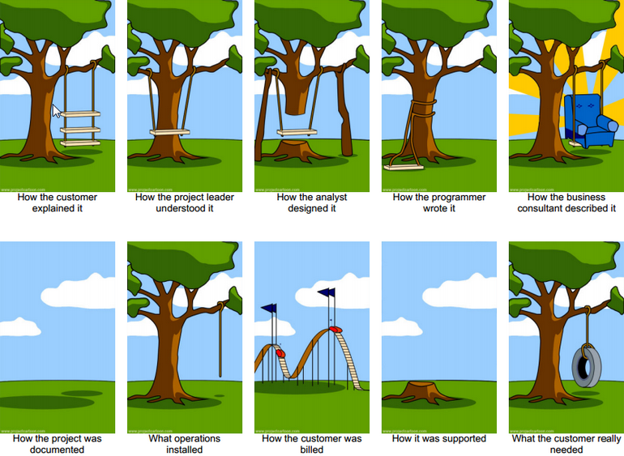

Working with Developers
Bringing your technology to life!
SeraphDev.com/Working-With-Devs
Who Am I
- Professional Software Developer Specialized in Full Stack Applications
- Educator with experience teaching technology
- Consultant focused on helping businesses find and solve the root of their problems
Why work with a developer?
- Create a new, custom product
- Have more control over the technology
- Delegate tasks to someone specialized
Some things to consider
- Development is costly
- Developers may have different ideas on how a project should work
- Custom development can take some time
- The product may have bugs
How Should You Work With A Dev
Working with a Dev should not be
Having clearly defined requirements is essential to get your product built
The Discovery Phase
At the beginning of a project, most developers will go through a "Discovery" phase. This is where they will try to figure out what the project is and what it should do.
This usually involves writing out a scope of the project, with all the requirements, time frame, and expected cost.
Cost of Indecision
- Shorter discovery phase saves you time
- Developer has a clear goal to work towards
- Less pivots and changes saves time and money
Having Requirements
- Project is held up in discovery
- Developer may be unsure of goals
- More likely to need to make changes to project
No Requirements
Communicate Clearly
Developers can't read your mind
Introducing User Stories
Now that you know what you want, you have to be able to communicate that clearly to the dev you are working with
A common method of this is by writing User Stories
These look like:
Users will be able to do something
Compare the Following
- I want to build a social media site where users can create posts, comments, and like post or comments
OR
- Users will be able to create an account
- Users will be able to log in to an account
- When a User is creates an account they will be automatically logged in
- A logged in User can create a Post
- A logged in User can create a Comment on a Post
- A logged in User can Like a Comment or a Post one time
Which one was more clear?
User Stories may seem like more work, but they provide a multitude o benefits for you and your developer, such as:
- Less ambiguity and less assumptions made
- A clear roadmap and way to view progress
- An easier method of changing requirements
- A base to build tests off of
Build an Onion
Your app should be built like an onion:
It should have layers
What does that mean?

Onion Architecture is a pattern in which the Domain acts as the core of the application, with layers above it to handle the various other functions of the app
Benefits of Onion Architecture
- Changes to outer layers becomes easier
- Code is more stable and easier to build onto
- Code isn't repeated and development is faster
How You help build the onion
- Understand your domains completely and avoid changes to them
- Write User Stories with the domain at the center first
- Talk to your developer about the domains your project will be using
Talk About Testing
But how to we make sure it stays working?
Testing your App
By asking your developer to write automated tests for the application, you can avoid problems such as:
- Changes breaking other parts of the app
- Bugs existing in the code
- Code being difficult to maintain
Testing tradeoffs
Writing Unit and Integration tests does take time and effort from the developer, and can increase initial costs of a project, however in the long run they help create an app that is able to be maintained for a long time
Select The Right Dev
Working with a developer can be a great experience, but make sure you find someone who is right for you and your project.
There are many different technologies and many styles of developers, do your research before working with someone